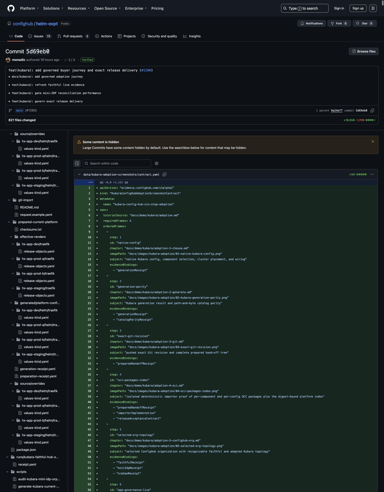

Goal
Prepare, review, commit, push, and independently verify one complete Kubara platform hand-off. The next step must receive an exact Git object ID and a fully inventoried selected path-not a mutable branch, a workstation directory, or an AI-produced translation.
“Complete” means every artifact needed to reproduce and understand the portable platform. It does not mean committing credentials, application secrets, or destination-specific cluster facts.
What remains Kubara
- Git retains Kubara's native
config.yamland supported values overrides. - Git retains Kubara's complete generated
platform-components/andplatform-configs/trees, including AppProjects and ApplicationSets. - Existing faithful-mode Git and Argo workflows can continue to review and reconcile the generated paths.
- The Git revision remains a portable exit and re-import point. ConfigHub does not become the only copy of the platform definition.
The preparer consumes Kubara's result; it never runs or emulates Kubara.
What ConfigHub adds
The deterministic hand-off adds a separate, clean subtree containing:
- the selected Kubara source and documented overrides;
- the generated component and configuration trees;
- exact Kubara, Helm, catalog, chart, and dependency locks;
- 13 deterministic effective renders;
- source/render checksums and generation/preparation receipts; and
- an offline provides/needs wiring graph.
The preparer inventories all named inputs before promotion and atomically replaces only its configured output path. It refuses overlapping paths, symlinks, pre-vendored opaque chart archives, ambiguous component matches, unreviewed exact versions, workstation paths, credential-shaped material, and input changes during preparation.
It does not create a ConfigHub organization, inspect a cluster, package OCI, or prove live reconciliation. Those boundaries remain explicit in later steps.
Prepare the current example
1. Start from the generated, verified platform
cd /absolute/path/to/helm-expt
npm run kubara-current-example:verify
git status --shortReview any existing changes before continuing. A dirty working tree is not automatically disposable, and the preparer must not be used to overwrite unrelated work.
2. Review the preparation request
Open current-platform.prepare.yaml. For this example it maps:
source config examples/kubara/current-platform/source/config.yaml
generated wrappers examples/kubara/current-platform/generated/platform-components/helm
generated configs examples/kubara/current-platform/generated/platform-configs
artifact lock examples/kubara/current-platform/component-artifacts.yaml
source lock examples/kubara/current-platform/source-lock.yaml
normal overrides examples/kubara/current-platform/source/overrides
clean output examples/kubara/prepared-current-platformFor an existing Kubara repository, copy this request and change only reviewed paths and contracts. source.path may name the root of a dedicated Kubara checkout; output.path must be a separate, non-overlapping subtree.
3. Generate the clean hand-off
Use the same SHA-pinned Kubara binary reviewed in Step 2:
export KUBARA_BIN=/absolute/path/to/kubara
npm run kubara-git-handoff:prepare-currentThis is the network/write phase. The preparer fetches only the exact reviewed artifacts, renders each enabled instance twice with the pinned profile, builds the wiring graph, scans structure for credential-shaped material, and promotes the output atomically.
4. Review the prepared subtree before committing
--generate verifies the staged preparation before its atomic promotion. Now review the promoted files and its machine-produced evidence:
git diff --stat -- examples/kubara/prepared-current-platform
sed -n '1,45p' \
examples/kubara/prepared-current-platform/preparation-receipt.yaml
tail -n 8 \
examples/kubara/prepared-current-platform/preparation-receipt.yamlThe receipt must name four clusters and 13 renders, and its status must record result: "pass", deterministic: true, and pathNeutral: true. Do not run kubara-git-handoff:verify-current yet: its zero-write contract intentionally requires the preparation request, raw inputs, and prepared output to be committed and clean. That independent verification occurs after the commit.
5. Review what will and will not be committed
Commit these groups together:
examples/kubara/current-platform/source/;examples/kubara/current-platform/generated/;- the source lock, component-artifact lock, checksums, and generation/parity receipts;
examples/kubara/git-import/current-platform.prepare.yaml; and- the complete
examples/kubara/prepared-current-platform/subtree.
The portable hand-off deliberately excludes:
apps/**-applications enter through the separate Step 6 workflow;target-facts/**and destination binding facts;.envand.env.*files;- credentials, private keys, secret values, and cluster access material; and
- the external scanner's report, which is retained in controlled evidence and referenced by digest rather than embedded in the portable tree.
Inspect the exact staged diff before committing:
git add -- \
examples/kubara/current-platform/source \
examples/kubara/current-platform/generated \
examples/kubara/current-platform/effective-renders \
examples/kubara/current-platform/source-lock.yaml \
examples/kubara/current-platform/component-artifacts.yaml \
examples/kubara/current-platform/source-checksums.txt \
examples/kubara/current-platform/generated-checksums.txt \
examples/kubara/current-platform/effective-render-checksums.txt \
examples/kubara/current-platform/catalog-parity-receipt.yaml \
examples/kubara/current-platform/generation-receipt.yaml \
examples/kubara/git-import/current-platform.prepare.yaml \
examples/kubara/prepared-current-platform
git diff --cached --check
git diff --cached --stat
git status --shortIf your repository uses different paths, stage the corresponding reviewed inputs and outputs explicitly. Do not use a broad staging command as a substitute for reviewing the boundary.
6. Commit and push the exact revision
git commit -m "Add prepared Kubara platform hand-off"
git push --set-upstream origin HEAD
git rev-parse HEAD
test "$(git rev-parse HEAD)" = "$(git rev-parse '@{upstream}')"Record the full lowercase commit object ID printed by git rev-parse HEAD. The Step 4 import request must use that immutable object ID and the selected prepared path; it must not use main, another branch, or a tag as its source identity.
7. Verify from a separate clean checkout
git clone https://github.com/confighub/helm-expt.git /absolute/path/to/clean-checkout
cd /absolute/path/to/clean-checkout
git checkout --detach <full-commit-object-id>
git status --porcelain
npm run kubara-git-handoff:verify-current
git status --porcelainBoth git status --porcelain commands must produce no output. For an adopter's repository, substitute its reviewed HTTPS .git remote and its preparation request.
Run the approved, pinned external secret scanner against this exact detached commit and selected path. Retain the scanner report outside the Git tree, bind its bytes and scope in the later import request, and separately review opaque files. The built-in structural scan and the external scan are defenses, not a mathematical proof that arbitrary bytes contain no secret.
Expected artifacts
The current clean hand-off is examples/kubara/prepared-current-platform. Its top level contains:
source/config.yaml and reviewed overrides
generated/platform-components/helm/
generated/platform-configs/
effective-renders/<cluster>/<service>/release-objects.yaml
component-artifacts.yaml
source-lock.yaml
generation-receipt.yaml
preparation-request.yaml
preparation-receipt.yaml
checksums.txt
wiring/graph.jsonIn the current committed tree, checksums.txt inventories 166 other files; together with checksums.txt itself, the selected hand-off contains 167 files. The authoritative statement is the recomputed verifier and receipt, not a count copied into prose: if an intentional input changes, regenerate the subtree and update the documentation from the accepted evidence.
The preparation receipt currently records finalGitCommitBound: false because preparation necessarily happens before the resulting commit exists. Step 4 binds the pushed source commit, selected path, external-scan attestation, and destination separately.
Machine checkpoint
From the detached clean checkout, run the independent offline verifier:
test -z "$(git status --porcelain)"
npm run kubara-git-handoff:verify-current
test -z "$(git status --porcelain)"
test "$(wc -l < examples/kubara/prepared-current-platform/checksums.txt | tr -d ' ')" = 166
test "$(find examples/kubara/prepared-current-platform -type f | wc -l | tr -d ' ')" = 167The verifier must pass and both clean-tree checks must remain silent. The count checks document the current example; the verifier is the substantive gate.
This checkpoint proves a deterministic, clean, pushed platform hand-off. It does not prove OCI publication, ConfigHub materialization, Argo sync, workload health, exact governed inventory, or a residue-free live organization.
Screenshot checkpoint
No GitHub screenshot is embedded until the exact revision is public, the checkpoint above passes, and the complete source-current live gate passes. This chapter owns exactly one future adoption frame, separate from the ConfigHub GUI tour.

Capture one real GitHub commit view that shows:
- the full commit ID;
- the source, generated, and prepared paths in the same change;
- the preparation receipt and checksum inventory; and
- the passing repository check associated with that commit.
The caption should say: “The exact Git revision is the portable Kubara hand-off; ConfigHub imports these reviewed bytes without an AI rewrite.” Do not expose scanner findings, credentials, signed URLs, tokens, or private repository details in the screenshot. Embed it at the declared path only when the six-frame adoption receipt binds the commit, repository tree, selected prepared-subtree tree, preparation receipt, image digest, UTC capture time, visible identities, sensitive-value handling, caption, and claim boundary. Until then, leave the hook unexpanded.
Troubleshooting
The preparation output overlaps an input
Choose a separate clean output subtree. The preparer intentionally refuses to rearrange or overwrite Kubara's native source and generated tree.
The preparer finds credential-shaped material
Remove the value from the portable path and provide it later through the selected target's secret-management boundary. Never suppress the refusal by renaming a secret-shaped file.
The verifier reports copied-input drift
An input changed after preparation. Review the change, rerun Kubara if needed, regenerate the hand-off, and verify again. Do not patch the prepared copy.
The checkout is dirty before or after verification
Start from the exact pushed commit in a separate checkout. Untracked files and generated residue are import refusals because they make the source boundary ambiguous.
The pushed branch and local commit differ
Do not continue with a branch name. Resolve the push, fetch the remote, and confirm the exact local commit equals its upstream. Then pin the full object ID in the import request.
The Git remote is mutable or ambiguous
Use the reviewed HTTPS remote ending in .git and a full immutable commit object ID. The importer should refuse mutable refs, a wrong origin, or a selected byte changing during compilation.
An external secret scan passes
Passing is necessary but not sufficient. Retain the exact scanner name and version, digest the report outside the tree, bind it to the commit and selected scope, and explicitly review opaque files before marking that review complete.
Safe to stop here
Yes. The exact pushed Git revision is the portable hand-off and can be reviewed independently before any OCI publication or ConfigHub mutation. Retain the scan attestation outside the tree and do not replace the commit with a moving ref.
Continue
← Step 2: let Kubara generate the platform · Step 4: import the Git revision and publish OCI →